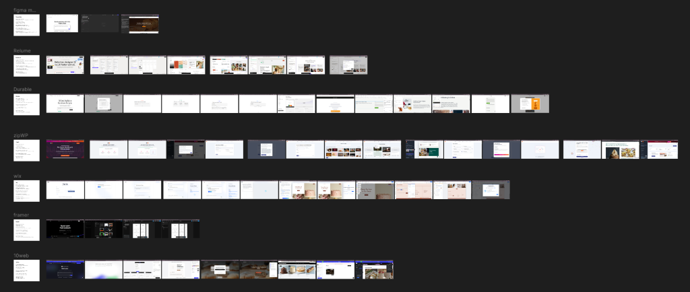
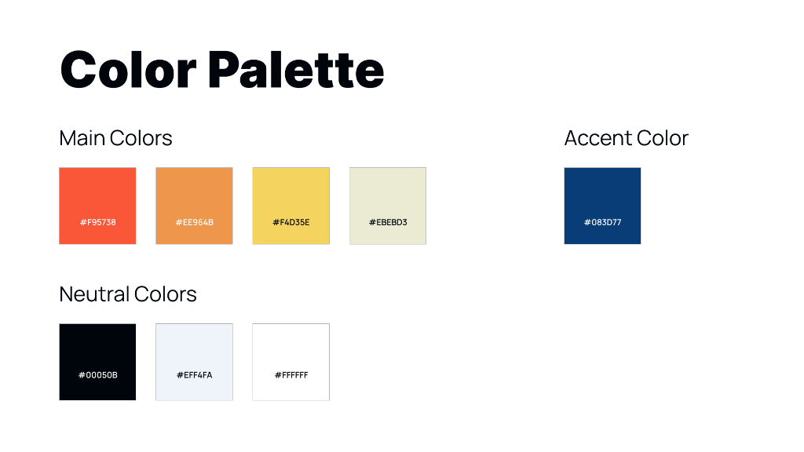
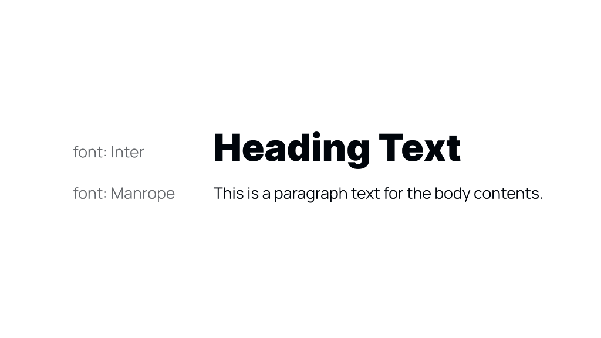
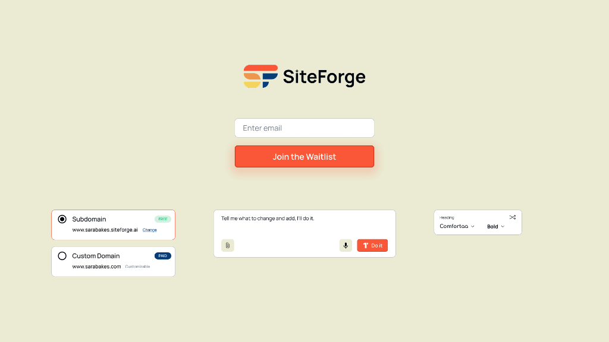

Designing SiteForge — an AI-powered website builder that lets anyone create a professional website through a simple, conversational interface. No templates. No blank canvas. Just describe your business and watch it build.

SiteForge is an AI-powered website builder that removes the friction of building a website from scratch. Instead of starting with templates and a blank editor, users simply describe their business through a guided AI conversation — and SiteForge generates a complete, branded website for them.
My role as the UX Designer was to design the end-to-end product experience: from the waitlist landing page through to onboarding, AI generation, visual editing, and publishing.
Building a website has always been a frustrating experience for non-technical users. Existing tools are either too rigid with templates or too complex with endless customisation options.
💡 Key Finding
Users don't want more features — they want a confident starting point. The biggest drop-off happens in the first 3 minutes when users face blank editors with no direction. An AI-guided onboarding flow reduces this friction by meeting users where they are and doing the heavy lifting for them.
I audited 7 AI website builders to understand where existing tools fall short for non-technical users — mapping their onboarding flows, AI capabilities, editing experiences, and publishing friction. This shaped the core decisions behind SiteForge's UX.

Competitive audit: Mapping onboarding flows, AI capabilities, and editing UX across 7 AI website builder products.
🎯 Opportunities for SiteForge
The user flow maps the complete journey — from landing on SiteForge to publishing a live website. Every step was designed to keep the user in a confident, guided state with no blank-canvas moments.

User flow: Landing page → AI generation → editing → account creation → publish.
Before designing the screens, I established SiteForge's visual identity — a warm, energetic palette that feels approachable and modern, paired with a clean typographic system built on Inter and Manrope.

Color palette: Main brand colors (#F95738, #EE964B, #F4D35E, #EBEBD3), accent (#083D77), and neutrals.

Typography: Inter for headings, Manrope for body text — clear hierarchy, optimised for readability.
A walkthrough of all key screens — from the waitlist landing page through to the live website success state — showing the full SiteForge experience.

Waitlist landing page: Clean, minimal entry point with the AI edit bar and domain options teased below the fold.

Screen 2: The AI begins generating the website — users see immediate progress rather than waiting on a blank screen.

Screen 3: First generated website preview — a complete, branded website ready to customise.

Screen 4: Website details panel — users review and refine the AI-generated content.

Screen 5: Completed website details — all business information filled in and confirmed.

Screen 6: Visual style selection — users choose a style direction and the AI applies it across all pages instantly.

Screen 7: Feature selection — users toggle the sections and pages they need without configuring any settings.

Screen 8: Business information input — the AI uses this to personalise copy, tone, and layout choices.

Screen 9: Direct inline element editing — click any part of the generated website to edit text, images, or layout.

Screen 10a: Account creation prompt — triggered only when the user is ready to publish, not before.

Screen 10b: Login screen — minimal, focused, with a clear path back to the editor.

Screen 11: Publish confirmation popup — subdomain vs custom domain choice, with a single clear call to action.

Screen 12: Website live — the success state celebrates the user's achievement and surfaces next steps.
Designing for AI-assisted products surfaced a set of unique UX challenges not present in traditional product design.
Looking for a designer who can bring your ideas to life? I'd love to collaborate on your next project.
Get In Touchor email me at uxsubash@gmail.com